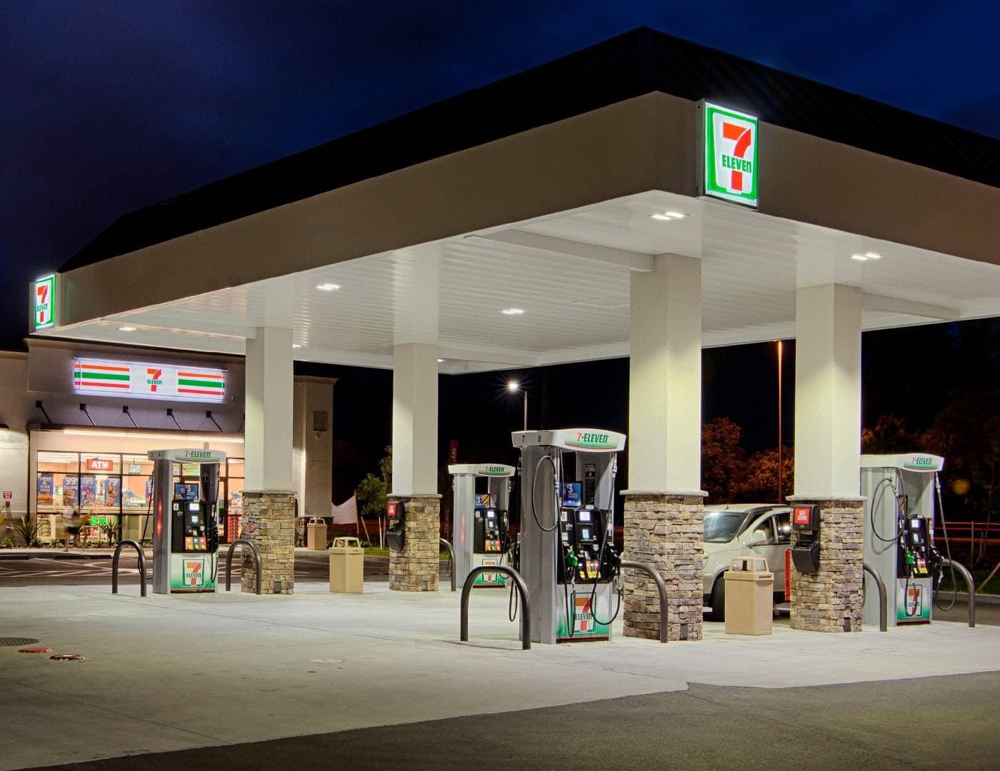

Focus
Council District 3
Tower / downtown edge. FPD Central Policing District covers most of this map.
New state tool
Prop 36 (Dec 18, 2024)
HSC 11395 treatment-mandated felony for hard-drug possession with two priors. PC 666.1 for repeat theft.
Method
Timed field checks
Same lots, same windows, repeated nights. Pattern, not a one-off complaint.
The point
Prior City of Fresno ordinances treated sidewalk disorder as an “unhoused status” problem. Intent does not equal outcome. Open-air use, pipes in hand, and lot-to-lot migration kept happening at the same corners after midnight and again before dawn.
This page separates three things that get mashed together in council talk:
- Poverty or lack of a bed.
- Camping, sitting, or storing bedding on a public way (Fresno Municipal Code § 10-2101).
- Using or being under the influence of non-cannabis controlled substances, and possessing the tools for that use, in public and on private lots open to the public.
Item 3 is a crime with or without a tent. Proposition 36 gave prosecutors a third-strike style handle on repeat hard-drug possession. It does not work unless patrol runs priors at the scene and books the right section.
City Hall record
On January 29, 2026, during the Fresno City Council meeting, public comment on item 2-H (Resolution 2681, dissolution of the Tower District Design Review Committee) included a warning against loaded labels. Appearance of a place and the function of a place are different questions. So are “unhoused” and “open-air narcotics market.” Mixing them produces policy that looks compassionate and leaves the same lots dirty at 4 a.m.
Watch: Fresno City Council Meeting 1/29/26 — timestamp 1:14:21 (item 2-H). Official channel: City of Fresno Council, Boards, and Commissions.
Field hotspots
Logged from routine inspection. These are problem day-and-time combinations, not a claim that every customer of these businesses is involved. 722 N. Blackstone sits on the District 1 / District 3 council edge and is included because the pattern feeds District 3 lots.
| Location | Council | Window | Days |
|---|---|---|---|
| 722 Blackstone (7-Eleven) | D1 edge / feeds D3 | Midnight – 7:30 a.m. | Fri, Sat, Sun, Mon |
| Jack’s Gas / Haven Dispensary parking — Abby & Belmont | District 3 | Midnight – 7:30 a.m. | Fri, Sat, Sun, Mon |
| FAST-N-SAVE & Johnny Quick lot — Van Ness & Belmont | District 3 | 4:00 a.m. – 7:30 a.m. | Every day |
| Fern & Maroa | District 3 | 6:30 p.m. – 2:30 a.m. | Thu, Fri, Sat, Sun |
| 2049 Broadway | District 3 corridor | Uncertain — needs a 14-day log | TBD |
| Additional dawn window (location name incomplete in field notes) | Confirm | 4:00 a.m. – 7:30 a.m. | Every day |
One line in the original log listed a daily 4:00–7:30 a.m. window without a street name. Do not assign it to a business until that gap is closed.

Legal toolkit (non-cannabis)
Cannabis public consumption is HSC 11362.3 and is not the subject of this briefing. The codes below are the ones that apply to pipes, needles used for hard drugs, being under the influence, repeat possession, repeat theft, and sidewalk camping.
Proposition 36 additions (effective December 18, 2024)
HSC § 11395 — Treatment-Mandated Felony
Possession of a “hard drug” (fentanyl, heroin, cocaine, cocaine base, methamphetamine, PCP, and listed analogs) by a person with two or more prior qualifying drug convictions. Wobbler. First felony term is county jail under PC 1170(h); subsequent can be state prison. Defendant may elect court-approved treatment in lieu of sentence; completion can dismiss the charge. Failure to complete can produce judgment and custody. No washout period on the priors. Officers should run local and state criminal history at booking so the DA can charge 11395 instead of a Prop 47 misdemeanor.
HSC § 11369 — Alexandra’s Law
Court must advise people convicted of specified hard-drug sales/manufacture that trafficking that results in a death can be charged as homicide, including murder under PC 187.
PC § 666.1 — Petty theft or shoplifting with two theft priors
New recidivist wobbler. Qualifying priors include petty theft, shoplifting, burglary, robbery, receiving stolen property, identity/mail theft, vehicle theft (VC 10851), and related theft statutes. No washout. This is the companion tool when the same lot produces both pipes and grab-and-run retail theft.
PC § 666 remains on the books
Older petty-theft-with-a-prior statute, narrowed by Prop 47. 666.1 is the Prop 36 expansion. Charge selection is a DA call; patrol’s job is complete priors and a clean report.
Use, influence, and paraphernalia (current HSC)
HSC § 11550 — Use / under the influence
Unlawful to use or be under the influence of specified non-cannabis controlled substances except under a valid prescription. Applies anywhere, including a parking lot. Misdemeanor, up to one year county jail. Repeat 11550 convictions inside seven years plus refusal of offered rehab: 180 days to one year. Firearm-in-possession enhancement exists for coke, heroin, meth, and PCP.
HSC § 11364 — Possession of paraphernalia
Opium pipe or device used for unlawfully injecting or smoking specified hard drugs. Cannabis accessories are out. As of January 1, 2026 (AB 309), personal-use syringes/needles are a permanent exception; so is obtaining controlled-substance checking services. A used meth or crack pipe is still 11364.
HSC §§ 11364.5 and 11364.7
Business display rules and delivery/manufacture of paraphernalia. Useful if a shop is stocking hard-drug hardware, not for a customer holding a pipe in the lot.
HSC §§ 11350 and 11377 — Simple possession
Still the default misdemeanor possession charges. 11395 overlays them when two priors exist. Do not skip the priors check.
HSC § 11376.5 — Good Samaritan / overdose
Immunity for personal-use possession, influence, and paraphernalia when someone in good faith seeks medical help for an overdose. Do not book the 911 caller for the pipe if the statute fits. Sales and distribution are not covered.
Public place and city code
PC § 647(f) — Public intoxication
In a public place, under the influence of a drug, unable to care for self or others, or obstructing a street or sidewalk. Misdemeanor. Protective custody rules exist for alcohol-only cases; drug influence is often charged criminally instead.
Fresno Municipal Code § 10-2101
Camping on a public place prohibited. “Camp” includes sitting, lying, sleeping, or storing shelter/bedding material. Loitering or standing that obstructs free passage is separately barred. Sensitive-use properties (schools, parks, libraries, city facilities, permitted shelters) have extra coverage. City Attorney may use civil nuisance actions in addition to misdemeanor citation. Amended after the 2025 jury acquittal to tighten language.
PC §§ 602 / 602.1 and business trespass letters
Private lots (7-Eleven, Jack’s, FAST-N-SAVE, Johnny Quick, dispensary parking) become enforceable only if the owner or manager signs a trespass authorization and is willing to appear or adopt a standing letter. Without that paper, the lot is a revolving door.

Stock image of a 7-Eleven canopy at night. Not a photo of 722 Blackstone.
Stock image of a night gas canopy. Pattern locations are parking lots, not the pumps themselves.
Suggested plan of attack for Fresno PD
This is a citizen operations brief for Central District command, the District Safety Team, HART, and the District Attorney. It is not a call for random sweeps of everyone who is poor. It is a call to treat documented hours as a deployment schedule.
1. Own the clock, not the slogan
- Build a four-week “lot watch” calendar that matches the table above. Friday–Monday midnights for Blackstone and Abby/Belmont. Daily 0400–0730 for Van Ness & Belmont. Thursday–Sunday evenings for Fern & Maroa.
- Do not staff these hours with a single passing beat car. Use a two-officer contact team plus one cover unit. The market reforms as soon as the car leaves.
- Assign 2049 Broadway a 14-day observation log (hourly marks, counts, drug indicators, theft pairing) before claiming a permanent window.
2. Split HART from the narcotics contact
- HART offers beds and treatment. That work continues.
- Open-air use with a pipe, foil, or loaded syringe in a parking lot is 11364 / 11550 / 11350 / 11377, and 11395 if priors exist. Do not close those cases as “referred to services” when the elements are on video.
- If the person is in medical distress, 11376.5 controls. Call medical first.
3. Priors check is the Prop 36 switch
- On every hard-drug possession arrest at these lots, run local plus state criminal history before booking is finalized.
- If two qualifying priors exist, book HSC 11395 in addition to or instead of 11350/11377. Note the priors in the narrative so the DA does not have to reconstruct them later.
- If the same subject is walking out of FAST-N-SAVE or 7-Eleven with unpaid merchandise, add PC 666.1 analysis.
4. Close the private-lot hole
- Meet the managers of 722 Blackstone 7-Eleven, Jack’s Gas, Haven, FAST-N-SAVE, and Johnny Quick in week one. Obtain standing trespass authorizations and after-hours contact numbers.
- Ask each owner for existing camera export procedure (how fast can a clerk pull 0400–0730 footage).
- If an owner refuses, document the refusal. Public sidewalk and curb line remain city property and stay enforceable under 647(f), 11550, 11364, and FMC 10-2101.
5. Light, cameras, and the 4 a.m. gap
- These lots work because they are lit enough to buy a lighter and dark enough at the edge to use. Request PW / Code Enforcement lighting surveys for Van Ness & Belmont and Abby & Belmont.
- Flock and existing ALPR already helped a Tower shooting case in August 2026. Point one additional plate-reader corridor at Belmont between Abby and Van Ness for 30 days and measure unique overnight plates that recur.
- Tower already gets heavy weekend nightlife staffing on Olive. That package does not cover 4 a.m. on Belmont. Stop treating those as the same problem.
6. Charge stack that matches the conduct
Suggested field decision tree (simplified):
- Observable use or influence of a hard drug → HSC 11550. If public and unable to care or blocking the way → add PC 647(f).
- Pipe, foil boat, or injection device for a listed hard drug → HSC 11364 (mind the syringe exception).
- Usable amount of the drug → 11350 or 11377, plus 11395 if two priors.
- Camping / stored bedding on sidewalk or sensitive use → FMC 10-2101. Offer services. If refused and elements met, cite or book per current city protocol.
- On private lot after a posted or served trespass → PC 602 series.
- Retail theft with two theft priors → PC 666.1.
7. 30 / 60 / 90 day scoreboard
| Day 30 | Day 60 | Day 90 |
|---|---|---|
| Trespass letters on file for all five named lots. 14-day log complete for 2049 Broadway. First midnight and 0400 details run. | Publish counts: contacts, 11550/11364/11350 bookings, 11395 referrals, 10-2101 citations, medical-aid calls, unique repeat subjects. | If a lot is unchanged, change the tactic (owner meeting, lighting, DA filing rate), not the press release. Drop or add hours from the table based on the new log. |
What this is not
- Not a request to arrest people for being poor.
- Not a request to ignore 11376.5 when someone is dying.
- Not a claim that every prior ordinance was written in bad faith.
- A request that District 3 stop using “unhoused status” as the explanation for a pipe on the curb at 4:12 a.m. on a Monday.
Sources
- Cal. Health & Safety Code §§ 11014.5, 11350, 11364, 11364.5, 11364.7, 11369, 11376.5, 11377, 11395, 11550 (leginfo.legislature.ca.gov).
- Cal. Penal Code §§ 647(f), 666, 666.1.
- Proposition 36 (2024), effective December 18, 2024. California Attorney General DLE advisory 2024-DLE-19; CDAA Prop 36 materials.
- Fresno Municipal Code § 10-2101; council amendments December 18, 2025.
- Fresno PD 2024 Annual Report — Central Policing District description (Tower service area).
- Fresno Bee, August 20, 2026 — Tower nightlife staffing vs. late-night disorder.
- City of Fresno Council meeting, January 29, 2026, YouTube official stream, 1:14:21, item 2-H.
- Field time windows: resident inspection log, High Tower District, August 2026.
This page is a public briefing, not legal advice and not an official FPD order. Charge decisions belong to the District Attorney. Field tactics belong to the Chief and the Central District captain.